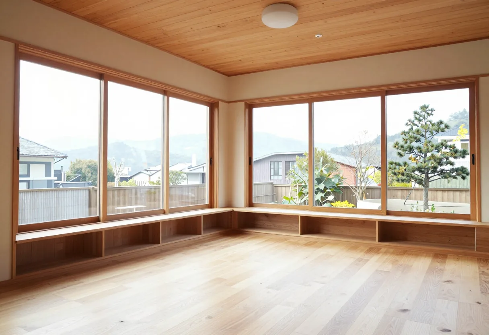

30代のご夫婦とお子さんの家
ご主人は、家族みんなで過ごせる広いリビング。奥さんは、収納と家事のしやすさ。それぞれが大切にしたいことを、話し合いながら整理しました。

どうして家を建てようと思ったのか。そこから伺います。
どちらかを我慢してください、という話にはしたくありません。それぞれが大切にしていることから、一緒に考えます。
焦って決めなくて大丈夫です。持ち帰って考える時間も、大切にしています。
ご主人は、家族みんなで過ごせる広いリビング。奥さんは、収納と家事のしやすさ。それぞれが大切にしたいことを、話し合いながら整理しました。
希望の日時をお知らせください。
まず、どうして家を建てようと思ったのかを伺います。希望が決まっていなくても大丈夫です。
図面を見ながら、案を出し合います。持ち帰って考える時間も取ってください。
間取りや金額など、具体的なお話も、お聞きになりたいときはいつでもお話しします。ただ、こちらから一方的に話を進めることはしません。
じっくり一緒に考えながら進めたい方に、
きっと合う進め方です。
地元で、注文住宅をつくってきました。大きな会社のような知名度はありませんが、地元で地道に仕事をしてきた工務店です。